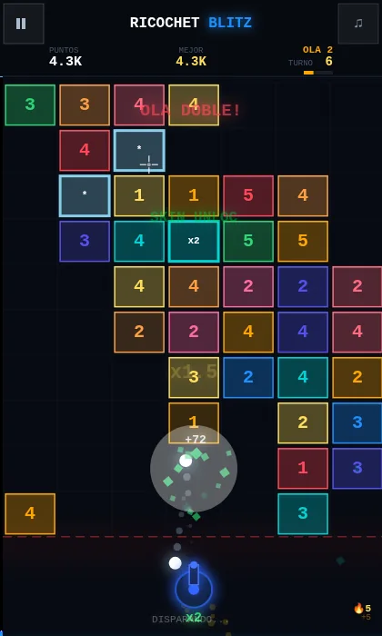
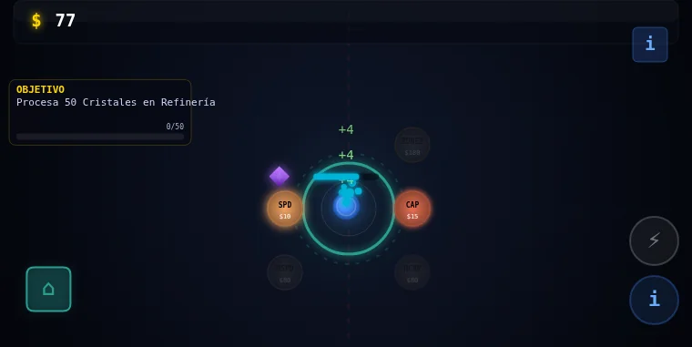
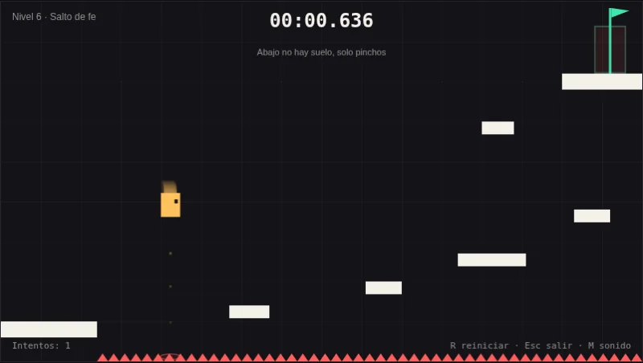
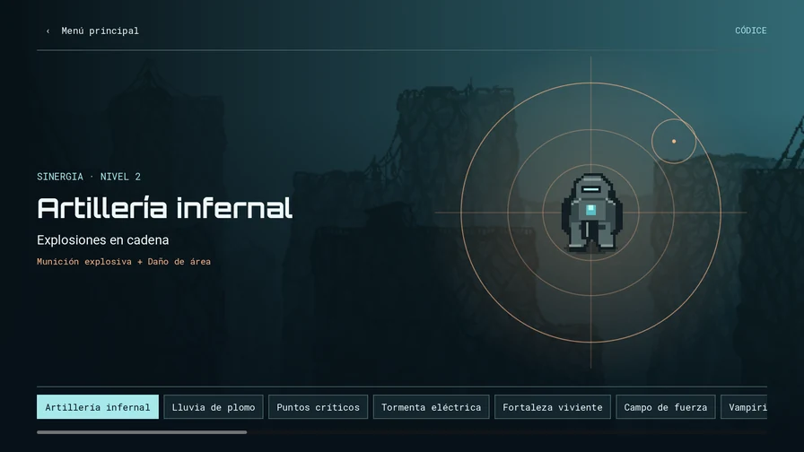

JUGABLEJUGADO
Ricochet Blitz
jugarJuego de cañón y rebotes. Físicas propias, power-ups (fuego, multi-disparo, freeze, bomba), modo daily con semilla fija y leaderboard local.
Desarrollador independiente de videojuegos.
Desarrollo videojuegos independientes, desde experiencias web hasta mundos construidos en Godot.

Juego de cañón y rebotes. Físicas propias, power-ups (fuego, multi-disparo, freeze, bomba), modo daily con semilla fija y leaderboard local.

Tycoon de jardín en JavaScript vanilla.

Minijuego de plataformas tipo speedrun en HTML/CSS/JS, con 10 niveles. Hecho en una jam de un día.
Administrá una estación de servicio en la Ruta 7. Alterná entre los surtidores y el minimercado, alcanzá la meta del turno y ampliá la playa mientras cae la noche.

Sobreviví a oleadas en una arena industrial. Las mejoras y sus sinergias cambian tu forma de combatir mientras SEREN dirige los eventos de la partida.

Desarrollo videojuegos en solitario desde hace un año.
Ricochet Blitz, Growstead y Rush Frames se pueden jugar acá mismo. También desarrollo Andesol y Siren Protocol en Godot.
Un juego con arquitectura filosófica coherente retiene jugadores que uno sin ella nunca alcanza.
Un GDD bien construido no describe el juego. Es el juego antes de existir en código.
La complejidad que se siente proviene de capas coherentes, no de mecánicas acumuladas.
E.E.S.T. N°5 — Berazategui
Último año de secundaria técnica · Egreso estimado 2026
Arquitectura con nodos y señales, máquinas de estados e interfaces. Ver Andesol y Siren Protocol.
Documentación técnica y narrativa en el GDD v7 de Siren Protocol.
Autovaloración en una escala de 1 a 5.
algo de esto te reconoció.
Si querés probar mis juegos, hablar de un proyecto o simplemente de universos que todavía no terminaron de encenderse — escribime.
Desarrollador indie de videojuegos, con juegos web jugables en el navegador. Disponible para colaboraciones.
escribir